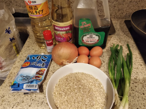
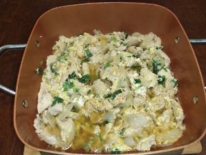
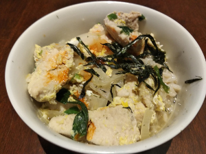

Okayodon (chicken and eggs with rice)
  
Ingredients:
- Chicken tights, rice, eggs, onions, green onions, dashi, soy sauce, mirin, sake, togarashi
How to make it:
- Cook rice separately
- Mix water with dashi, soy sauce, mirin, and sake
- Cook chicken slice and onions with the mix above until chicken is not pink
- Add eggs and green onions
- Serve on top of the rice, add togarashi for spicy flavor